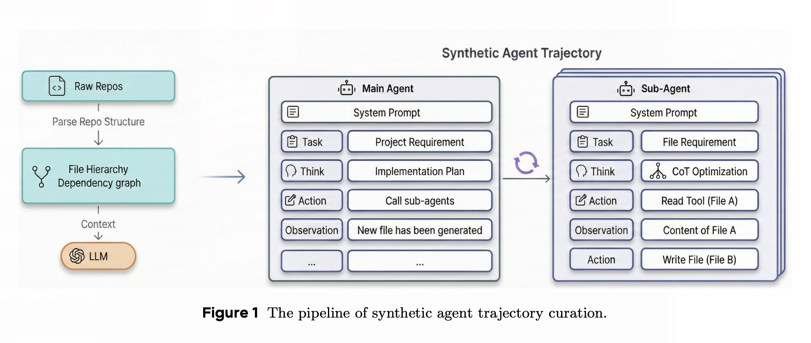
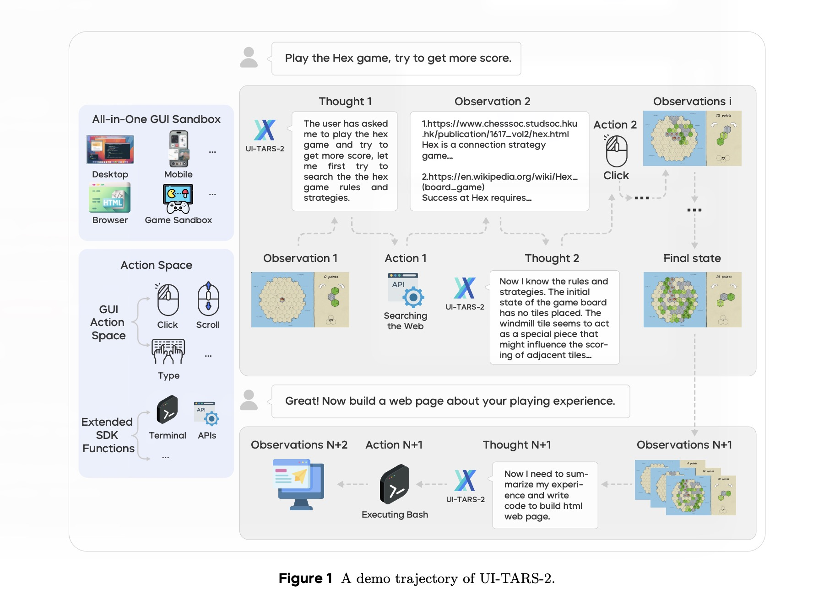
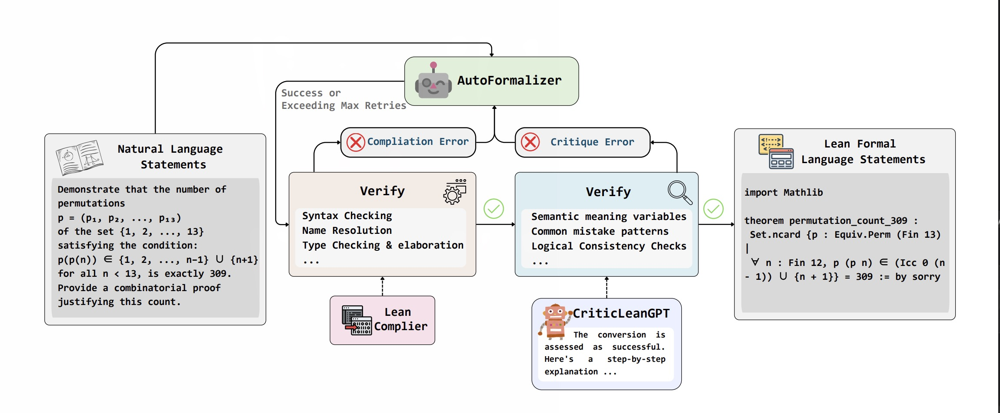
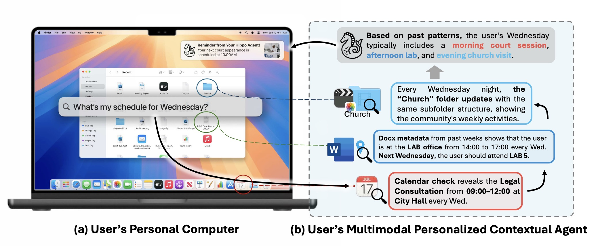

About
News
Education |
|
|
Nanyang Technological University
Undergraduate Student Jul. 2023 - Jul. 2027 Undergraduate student at Nanyang Technological University majoring in Data Science and AI Research Interests: NLP,LLM,Agent data Synthesis and frame, World Model |
|
Experiences
Publication and Projects
I have participated in several research projects. Most of them are about LLM Agents
Built an efficient pretraining data pipeline for code models, combining curated software repository data with refined CoT reasoning traces to enhance foundational coding performance and agentic potential.

UI-TARS-2, is a a native GUI-centered agent model shown promise by unifying perception, reasoning, action, and memory through end-to-end learning, open problems remain in data scalability, multi-turn reinforcement learning (RL), the limitations of GUI-only operation, and environment stability. I contributed to the project by collecting early-stage game-environment trajectories for supervised fine-tuning and building verifiers to evaluate the final model’s performance across diverse game environments.

CriticLean highlights that reliable formalization depends not only on improving the generator, but also on strengthening the critic/verifier that evaluates semantic fidelity. In this work, CriticLeanGPT is trained as an active semantic critic, combining Lean compiler feedback with learned judgment to assess whether generated Lean 4 formalizations faithfully capture the intent of the original mathematical statements.

a new benchmark designed to evaluate agents’ capabilities on multimodal file management,emphasizing on searching from massive personal files for context-aware reasoning. experiments reveal a significant performance gap that agents perform poorly in long-horizon and cross-modal reasoning within dense personal file systems.Furthermore, our step-wise failure diagnosis identifies multimodal perception and evidence grounding as the primary bottlenecks.